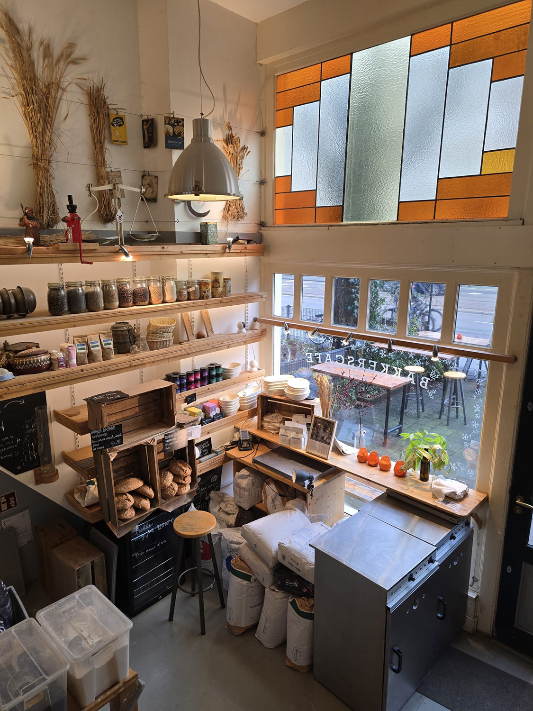
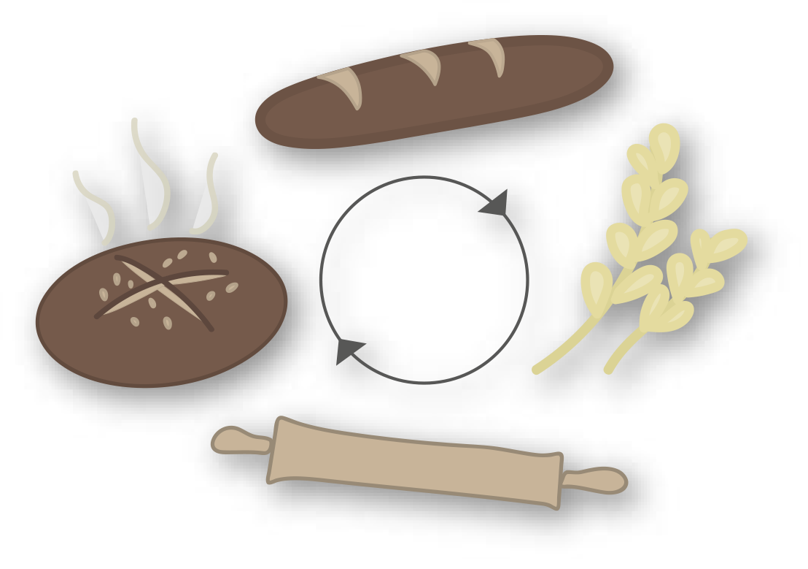

Mensen weten bijna niet meer hoe je kunt hergebruiken, ze gooien maar weg. Je kunt immers heel snel weer nieuw voedsel kopen. Om mensen hiermee opweg te helpen heeft Baking Lab leuke recepten bedacht die ook nog eens makkelijk te maken zijn.
Hun recepten staan in teken van hergebruik en zij noemen dit met een duur woord: circulair ondernemerschap.
Ze helpen mensen duurzamere keuzes te maken op het gebied van voedsel, dit doen ze aan de hand van circulair brood gebruik.
Ik zal dit circulair brood gebruik even aan je uitleggen. Wat je doet: eerst verzamel je oud brood, hier maak je een broodverbeteraar van, dit voeg je toe aan het nieuwe brooddeeg en hier kan je weer heerlijk nieuw brood van maken. Dit brood heeft ook verbeterde eigenschappen, zo heeft dit voordelen voor de smaak en kwaliteit.
